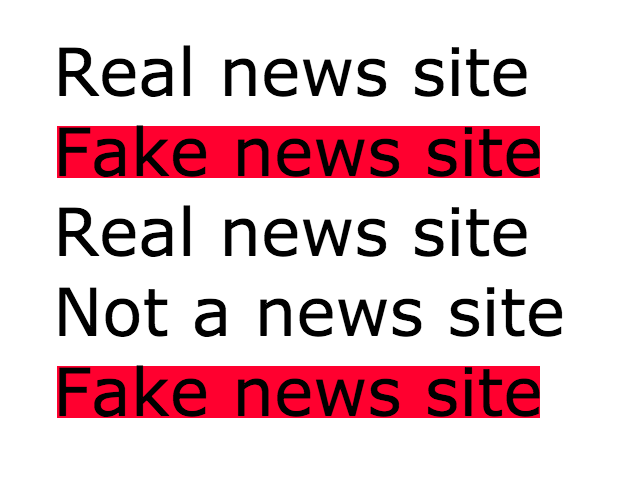
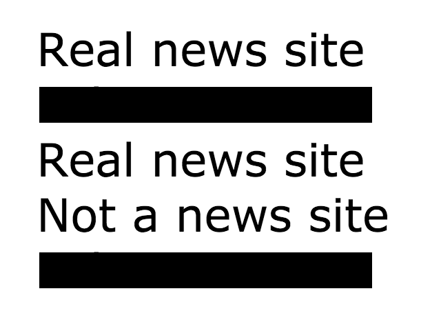

<div class="themes-title"><h1>Themes</h1></div>
<!--<span>
  
  
</span>-->
<div class="radio themes-div">
<form ng-controller="themesController">
  <label>
    <input type="radio" ng-model="radioButton.selected" value="default" ng-click="setTheme(defaultTheme)">
    Default
    <div>
      Preview: <br />
      Real News site: <a href="">www.npr.org</a><br />
      Fake News site: <a style="background-color:#DC143C" href="">www.breitbart.com</a><br />
      Satire News site: <a style="background-color:#FFA500" href="">www.theonion.com</a><br />
      Biased News site: <a style="background-color:#FFFF00" href="">www.whatdoesitmean.com</a><br />
    </div>
  </label><br />
  <label>
    <input type="radio" ng-model="radioButton.selected" value="censorTheme" ng-click="setTheme(censorTheme)">
    Old School Censor
    <div>
      Preview: <br />
      Real News site: <a href="">www.npr.org</a><br />
      Fake News site: <a style="background-color:#000000;color:#000000" href="">www.breitbart.com</a><br />
      Satire News site: <a style="background-color:#000000;color:#000000" href="">www.theonion.com</a><br />
      Biased News site: <a style="background-color:#000000;color:#000000" href="">www.whatdoesitmean.com</a><br />
    </div>
  </label><br />
</form>
</div>
